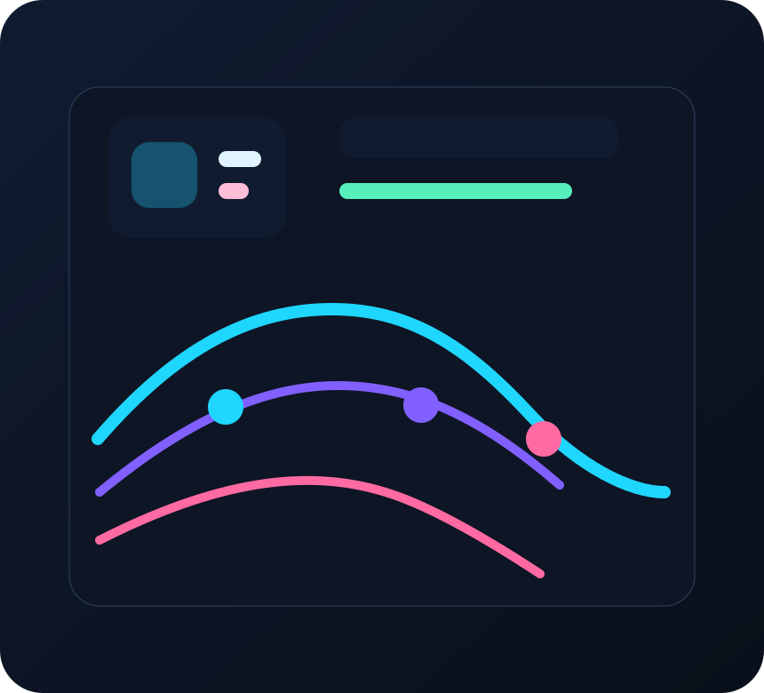

Experience
Experience built through shipping, analyzing, and improving live systems.
My path runs through backend implementation, dashboarding, reporting, and AI automation thinking. It’s the mix that gives this portfolio both technical and business credibility.

Impact signal